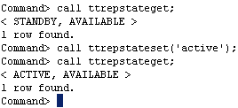

This section describes how to perform a failover to the standby cache database after a failure on the active cache database or server, including how to rebuild the previous active cache database from a standby cache database.
This tutorial uses the DSN cachedb1_1211. The hostnames of the two machines are tthost1 and tthost2. cachedb1_1211 was the active cache database on tthost1, and cachedb2_1211 on tthost2 will be converted to become the new active cache database.
1. Stop the replication agent on the failed database
Stop the replication agent on the failed database if it has not already been stopped.
Log in to server 1 (tthost1) as the instance administrator, use the ttAdmin utility to stop the replication agent on cachedb1_1211.
ttadmin -repstop cachedb1_1211
2. Set the state of the standby cache database to active
In ttIsql, connect to cachedb2_1211 as the replication administrator cacheadm.
ttIsql
connect "dsn=cachedb2_1211;uid=cacheadm;pwd=cacheadm;oraclepwd=cacheadm";
Use the built-in procedure ttRepStateSet to designate the current database as the new active database in the active standby pair.
call ttrepstateset('active');
Verify the current replication state by calling the built-in procedure ttRepStateGet.
call ttrepstateget;

Once the cache database entered the active state, it has been converted to an active database. Applications that were previously connected to the failed database can now be diverted to the new active database. See the section on Replication failover and recovery for more information.
3. Mark the previous active cache database as failed
Use the procedure ttRepStateSave to register the former active database as failed.
call ttrepstatesave ('failed','cachedb1_1211','tthost1');
4. Stop the cache agent on the failed database
Stop the cache agent on the failed database if it has not already been stopped.
Log in to server 1 (tthost1) as the instance administrator, use the ttAdmin utility to stop cache agent on cachedb1_1211.
ttadmin -cachestop cachedb1_1211
5. Destroy the failed cache database
Use the ttDestroy utility to remove the failed database (cachedb1_1211) on server 1 (tthost1). Depending on the state of the database, you may have to use the -force option in ttDestroy to remove the failed database.
ttdestroy cachedb1_1211
6. Duplicate the new active database to create a new standby database
Use the utility ttRepAdmin to create the standby database on server 1 (tthost1), by duplicating from the new active cache database.
ttrepadmin -duplicate -from cachedb2_1211 -host "tthost2" -uid cacheadm -pwd cacheadm -keepcg -cacheuid cacheadm -cachepwd cacheadm "dsn=cachedb1_1211"
7. Start the replication agent on the new standby database
In ttIsql, connect to cachedb1_1211 as the replication administrator cacheadm, and use the built-in procedure ttRepStart to start the replication agent.
ttisql
connect "dsn=cachedb1_1211;uid=cacheadm;pwd=cacheadm;oraclepwd=cacheadm";
call ttrepstart;
Verify that the standby cache database has entered the standby state by using the ttRepStateGet built-in procedure.
call ttrepstateget;

8. Start the cache agent on the new standby database
Call the built-in procedure ttCacheStart to start the cache agent on the standby database.
call ttcachestart;
The configuration of an active standby pair is completed. Changes to the data in the active database will be automatically
replicated to the standby database.
For more information about Recovering from a Failure on the Active Cache Database please refer to the documentation here